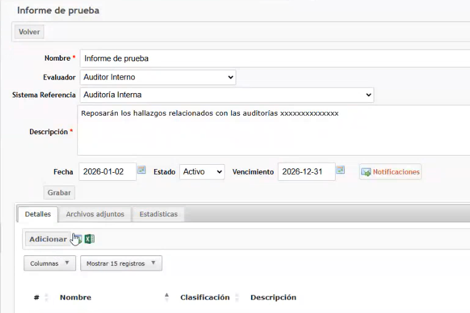
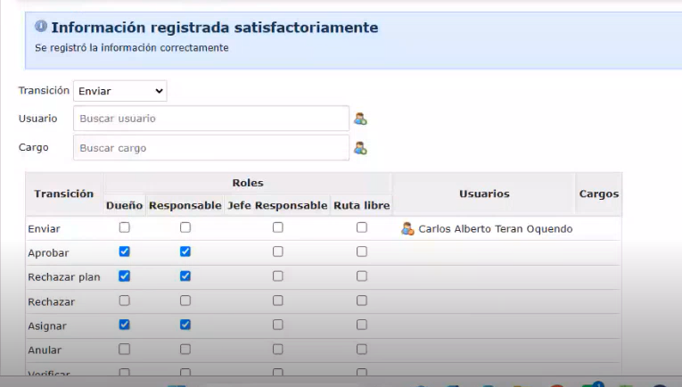
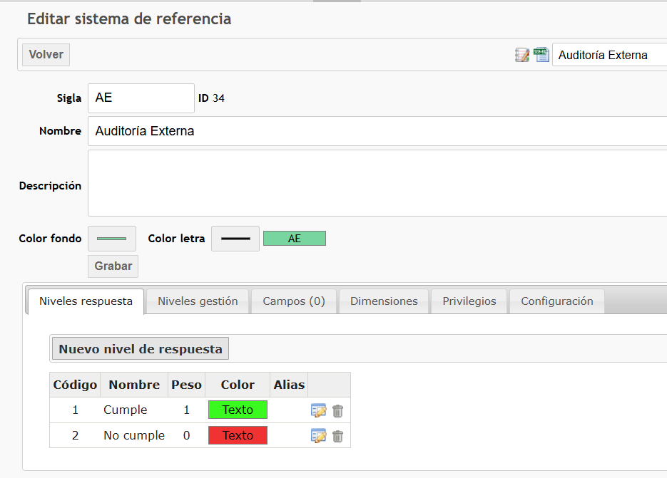
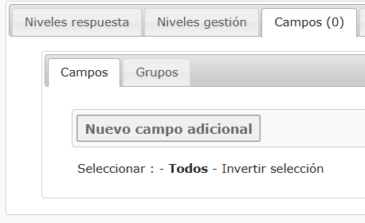

Descargar habilidad
Descargar habilidad
Crear informe de evaluación
El informe es el contenedor principal. Una vez creado, habilita la opción para cargar los hallazgos asociados.
- 01En la parte superior izquierda de la sección, haga clic en «Nuevo informe».
- 02Diligencie el formulario. Los campos marcados con asterisco son obligatorios.Nombre Evaluador Sistema de referencia Descripción Fecha
- 03Haga clic en el botón «Grabar».
Lógica de fechas: todos los hallazgos dentro del rango cronológico definido en este campo se consolidan automáticamente dentro del informe.
Crear hallazgo para el informe
Disponible para informes creados y guardados.
- 01Ingrese al informe creado y haga clic en el botón «Adicionar».

- 02En el formulario de registro, diligencie los campos requeridos.Código Clasificación Nombre Descripción
- 03Cargue o adicione archivos adjuntos si el proceso lo requiere.
- 04Utilice el buscador del sistema para encontrar la unidad auditable correspondiente, selecciónela y confirme la asociación.
Vinculación obligatoria: todo hallazgo debe estar atado a una Unidad Auditable. No es un campo opcional.
La clasificación del hallazgo es 100% parametrizable.
Añadir o dar seguimiento a un plan de mejora
Registre el avance de una acción de mejora dentro de su plan (por ejemplo, Plan de Mejora ICONTEC 2025-2026 o PAMEC).
- 01Entre al plan de mejora de interés.
- 02En los detalles auditables, haga clic en el número de «Acciones de mejora» y entre a la acción correspondiente.
- 03Vaya a la pestaña «Seguimiento» o «Seguimientos de control», según lo que necesite registrar.
- 04Haga clic en «Adicionar» y diligencie los campos requeridos.
- 05Haga clic en «Grabar».
Adicionar nuevos evaluadores
Use esto si el evaluador que necesita no aparece al crear el informe.
- 01Haga clic en «Crear emisor».
- 02Llene los campos requeridos y guarde.
Adicionar o ajustar un sistema de referencia
Use esto si requiere estructurar una nueva norma o modificar comportamientos internos.
- 01Haga clic en «Adicionar sistema de referencia».
- 02Llene los campos y presione «Grabar».
Si un sistema ya contiene hallazgos, el botón «Eliminar» se bloquea automáticamente.
Estando dentro de un sistema de referencia, vaya a la pestaña Privilegios (parte inferior). En el cuadro «Transiciones», asigne las acciones (enviar, devolver, aprobar…) a un usuario o cargo y presione el ícono verde. Se pueden asignar múltiples responsables.


Vaya a la pestaña Niveles de respuesta → «Nuevo nivel de respuesta». Llene Código, Nombre, Peso y Color. Si activa «Genera punto de atención», el sistema creará un hallazgo automático al marcar esta opción — por ejemplo, «No cumple».

Vaya a la pestaña Grupos → «Nuevo agrupador» para crear el contenedor (defina su ubicación y desactive «Mostrar nombre»). Luego vaya a «Nuevo campo adicional», llene los datos y elija el tipo de campo — selección múltiple, una línea, etc.


Adicionar o ajustar puntos de atención
Use esto para modificar las clasificaciones automáticas del sistema.
Configurar seguimientos y privilegios
Use esto para definir, por cada sistema de referencia (ej. Auditoría interna, PAMEC), quién puede hacer seguimientos sobre sus planes.
- 01Seleccione el sistema de referencia al que está relacionada la evaluación a la que se le hará seguimiento.
- 02Vaya a la pestaña
Privilegiosy haga clic en «Administrar privilegios». - 03En la ventana de privilegios, busque al usuario y seleccione los privilegios que tendrá.Administración Consulta Adición de evaluación
- 04Haga clic en el botón verde con el símbolo «+».
- 05Haga clic en «Cerrar».
Vaya a Admin → Evaluaciones → Administrar planes, abra un plan que use ese sistema de referencia y entre a una acción. En las pestañas «Seguimientos» y «Seguimientos de control» debe aparecer el botón «Adicionar». Si no aparece, repita los pasos anteriores.
Ver la operación completa en video
Grabación de la reunión de capacitación del módulo, por si necesita ver el flujo en pantalla.